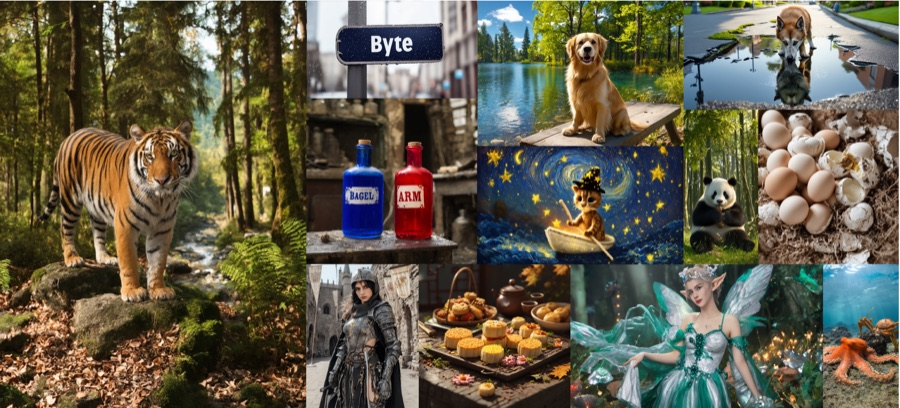
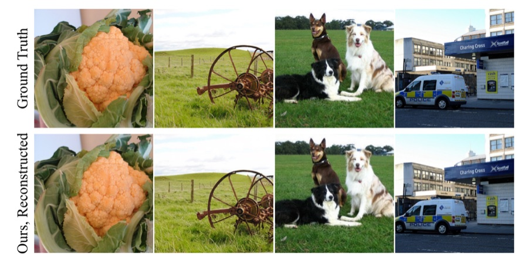
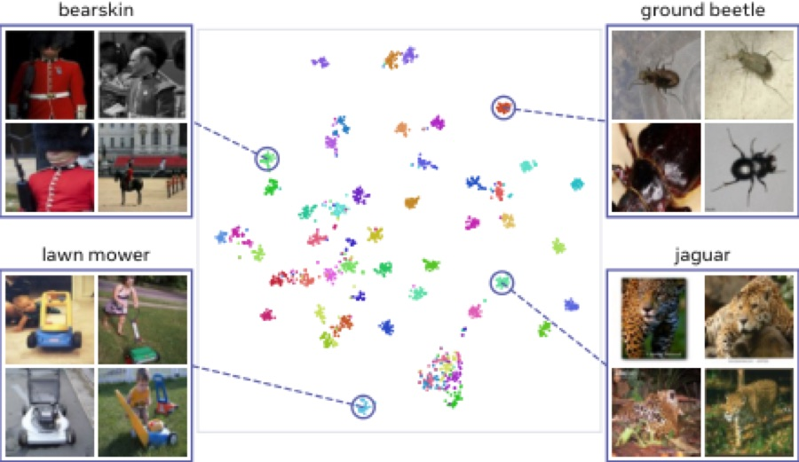
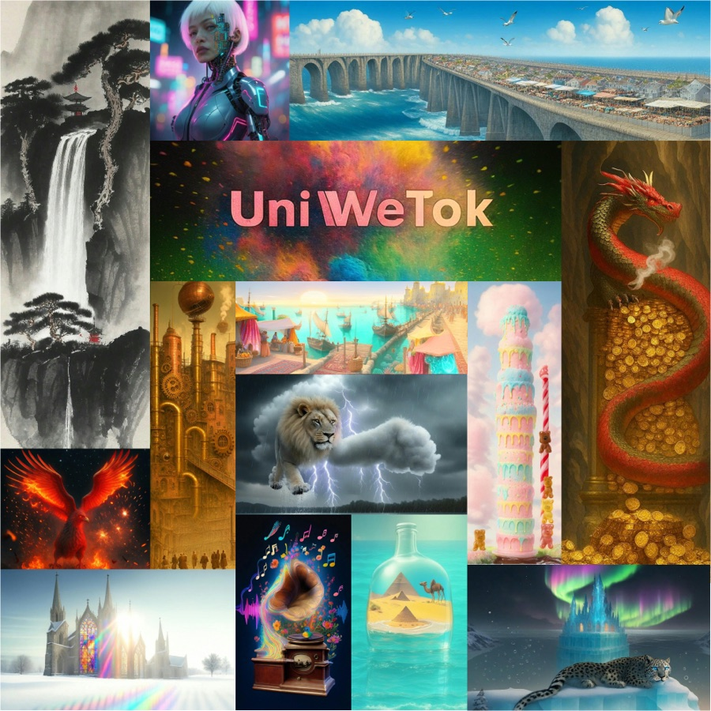
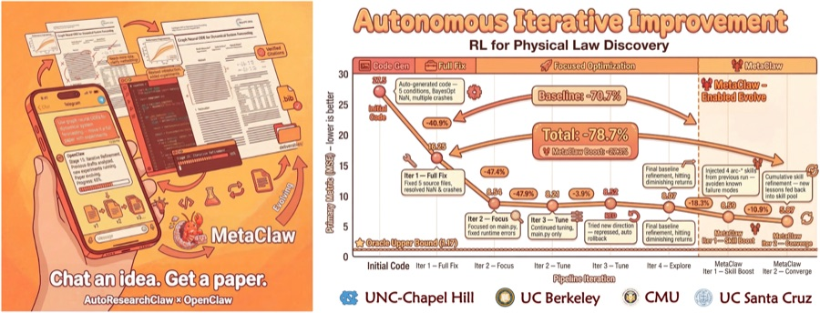
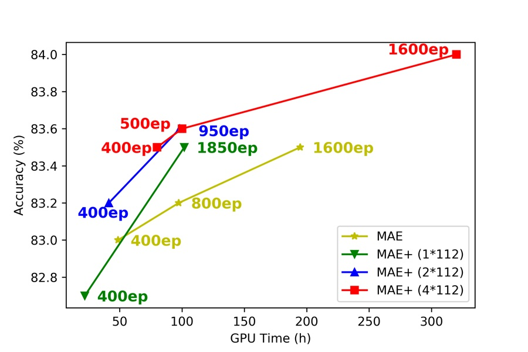
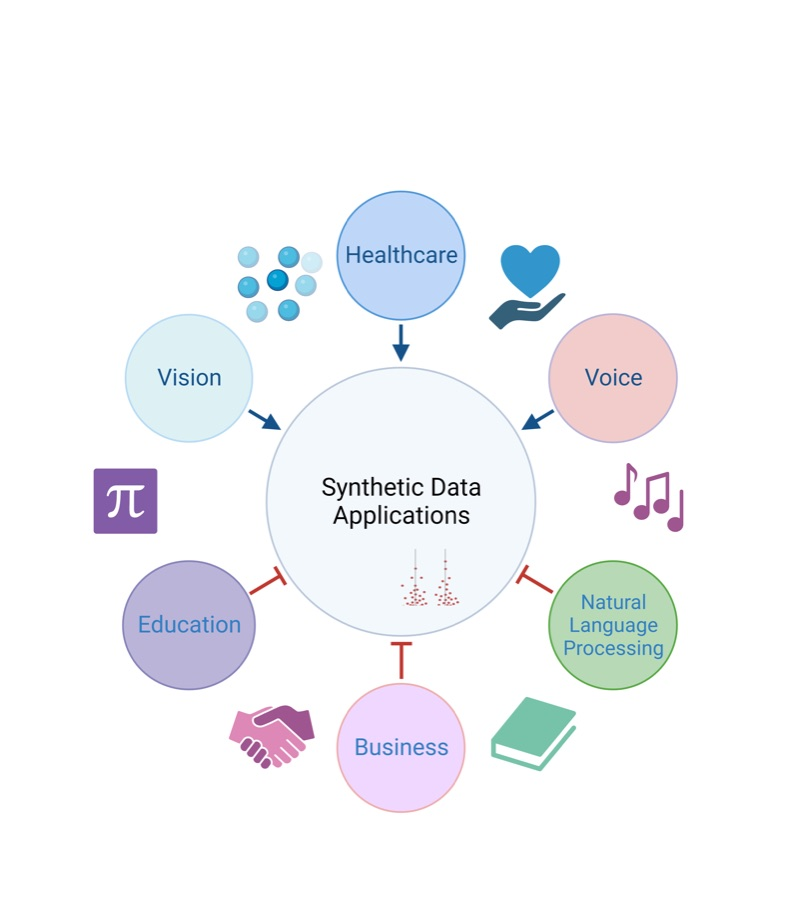
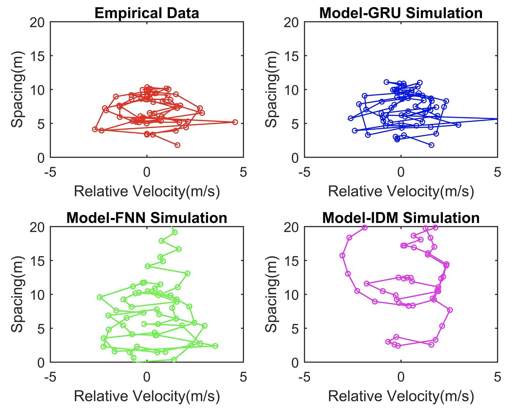

About me
Xiao Wang is an AI Research Scientist at Meta, focusing on pre-training of multimodal LLMs, multimodal embedding, and vision tokenizers. Before joining Meta, he was a Member of Technical Staff at xAI, working on vision and multimodal pre-training (Grok 4.5-4.6 vision tokenizer).
He received his Ph.D. in Computer Science from Purdue University, where he focused on representation learning, and his bachelor's degree in Computer Science from Xi'an Jiaotong University. His broader research interests include multimodal pre-training, representation learning, and generative modeling.
Previously at
xAI
TikTok AI
University of Washington
Futurewei AI Lab
JD AI Research
Meta AI (FAIR)
Google Scholar citations
Selected publications
* equal contribution · † corresponding author
2026




2025


2024

2023




2022


2021
2020


2017

Capturing Car-Following Behaviors by Deep Learning
Nominated for the George N. Saridis Best Transactions Paper Award
No publications match this topic.
Open source
Live GitHub star counts
Unified autoregressive large multimodal model with discrete visual tokens for understanding, text-to-image generation, and editing.

Implicit neural representation hyper-network that produces compact, unified vision embeddings for both recognition and generation (ECCV 2026).

Self-reinforcing multi-agent system for autonomous research with human-AI collaboration.


Shows experimentally that asymmetry matters for Siamese representation learning, with clear gains.

Cooperative-adversarial contrastive learning where both positive and negative samples are directly learnable.